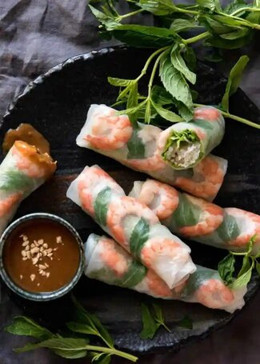

Vietnamese Rice Paper Rolls

Description
Vitnamese Rice Paper Rolls served with Vietnamese Peanut Dipping Sauce
Ingredients
Vietnamese Rice Paper Rolls
- 7-14 sheets of 8.5" round rice paper
- 11 small cooked prawns/shrimp
- 1.5 oz dried vermicelli noodles
- 14 mint leaves
- 1 cup bean sprouts
Vietnamese Peanut Dipping Sauce
- 1 tbsp peanut butter
- 1 tbsp Hoisin Sauce
>
- 1 1/2 tbsp white vinegar or lime juice
- 1/3 cup milk
- 1 garlic clove, minced
- 1/2 tsp crushed chilli, samba oelak or other chilli paste
Steps
- Peanout Sauce:Combine the Peanut Dipping Sauce ingredients.
Mix briefly (it won't come together), then microwave for 30 seconds. Mix again
until smooth. Set aside to cool. Adjust sour with vinegar, salt with salt and
spiciness to taste. Thickness can be adjusted with milk or water once cooled.
- Place vermicelli noodles in a bowl and cover with warm water for 2 minutes, then drain
(or follow packet instructions).
- Peel the prawns, slice in half lengthwise and devein.
- Remove the crunchy core of the lettuce leaves.
- Tip - LETTUCE BUNDLE: Place some vermicelli noodles and bean sprouts in a lettuce leaf,
then roll it up, finishing seam side down. Repeat.
- Fill a large bowl with warm water. The bowl doesn't need to be large enough to fit the
whole rice paper in one go.
- Place two rice papers together (if using 2). Note which side is the smooth side - this is
supposed to be the outside of the spring roll. Submerge the rice papers into the water
(both of them at the same time, together) for 2 seconds. If your bowl isn't large enough to
fit the whole rice paper in one go, that's fine, just rotate it and count 2 seconds for each
section you submerge into the water.
- Place both the rice papers (one on top of the other, they will stick together) on a board or
the counter with the smooth side down.
- On the top part of the rice paper, place 3 prawns with a mint leaf in between, as per the photo below.
- Place the lettuce bundle with the seam side down onto the middle of the rice paper.
- Fold the left and right edges of the rice paper in, then starting from the bottom, roll up to cover the
lettuce bundle. Then keep rolling firmly. The rice paper is sticky, it will seal itself.
- If you placed the ingredients on the rice paper as per the photo below, your rice paper rolls should look
pretty with the prawn and mint leaves on the smooth side of the roll and the seam on the side or underside of the roll.
- Serve immediately with the peanut dipping sauce.